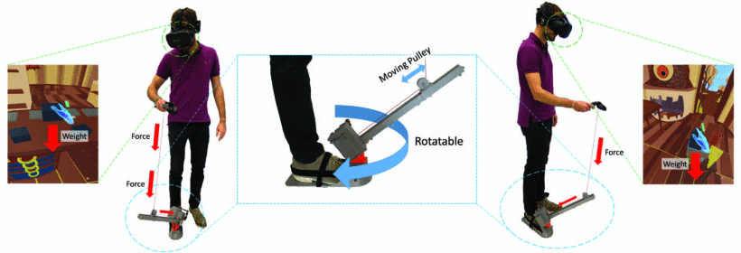
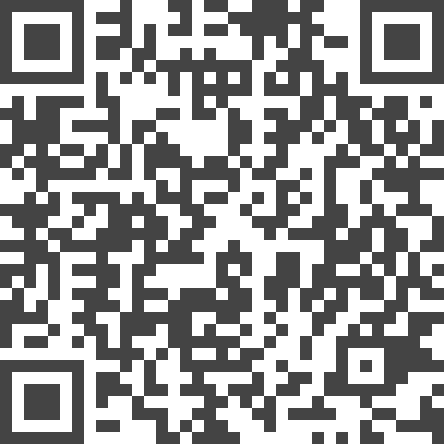

STROE: An Ungrounded String-Based Weight Simulation Device

Authors. Alexander Achberger, Pirathipan Arulrajah, Michael Sedlmair, Kresimir Vidackovic
Venue. VR (2022) Full Paper
Type. Full Paper
Abstract. We present STROE, a new ungrounded string-based weight simulation device. STROE is worn as an add-on to a shoe that in turn is connected to the user’s hand via a controllable string. A motor is pulling the string with a force according to the weight to be simulated. The design of STROE allows the users to move more freely than other state-of-the-art devices for weight simulation. It is also quieter than other devices, and is comparatively cheap. We conducted a user study that empirically shows that STROE is able to simulate the weight of various objects and, in doing so, increases users’ perceived realism and immersion of VR scenes.
